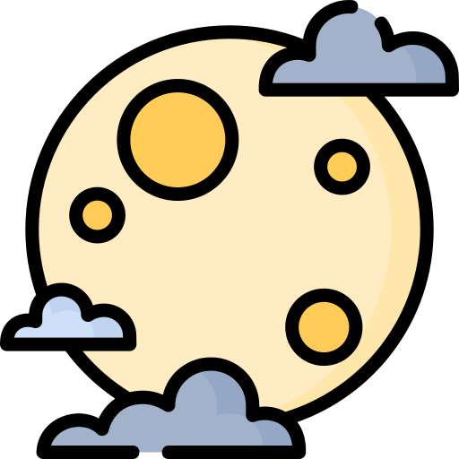

Videojuegos
04/11/21
Hacen daño los videojuegos
Los videojuegos no son malos ni buenos son entretenimiento que dependiendo de su uso es correcto o incorrecto en realidad los videojuegos no son malas son diseñados para disfrutar y entretener a los niños por unas cuantas horas, pero lo que ha provocado los padres o la creación de los niños es que los dejan jugar 12 o más horas diarias, esto causo la cantidad de depresión y otras enfermedades. Ensi no están mal los videojuegos si no el uso que las personas le dan un uso diferente la propósito que este fue creado por el desarrollador Gracias por Leer